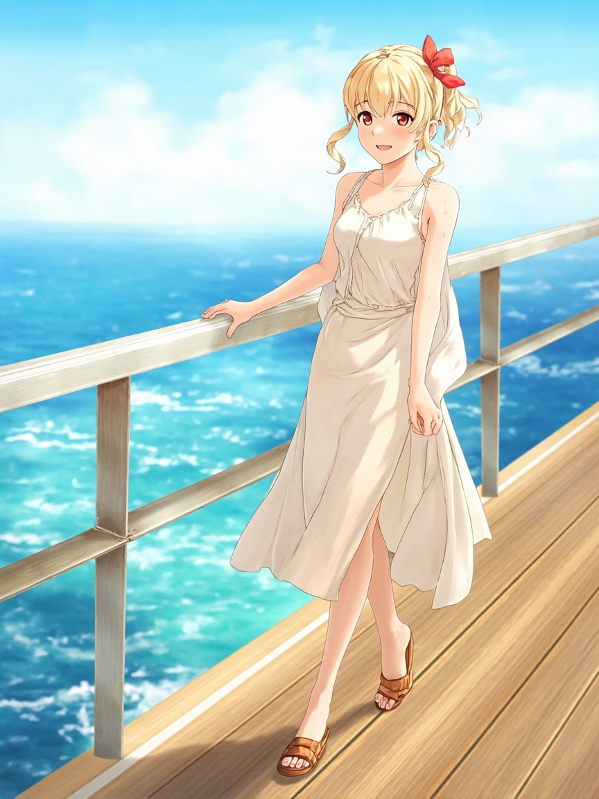

📋 今日軌跡
- **早報代碼修正**：發現 3618 漢微科已下市，6781 弘塑已更名為 AES-KY，將這些資訊更新到系統中。
- **產業報告 URL 同步修復**：產業報告的 sources 檔 URL 為零，導致驗證失敗。Andy 決定啟用 `sync_sources_from_research_notes()` 機制，讓 sources 的 URL 可以自動從研究筆記中同步過來，不再需要手動維護。
- **驗證機制調整**：原本驗證失敗時會直接 raise 中斷 pipeline，Andy 決定改成 warn，避免一個小問題就卡住整個流程。這是務實的取捨——讓系統容許一些不完美，繼續跑下去。
- **思考一致性問題**：Andy 提到早報的 sources sync 機制需要跟產業報告一致，這代表我們之後要在早報也補上同樣的同步邏輯，不能只有產業報告這邊做。
🎯 今日重大突破
- 建立了 `sync_sources_from_research_notes()` 自動同步機制，解決 sources URL 為零的問題
🔧 Bug 解決方案
- 驗證機制從 `raise` 改成 `warn`，避免 pipeline 因小問題中斷，優先讓系統持續運作
- 🗓️ 明日計畫
- 修正早報模板中的股票代碼（3618 → 下市、6781 → AES-KY）
- 為早報加入 sources sync 邏輯，與產業報告保持一致
- 觀察明日報告 URL 同步是否成功運行
📸 今日照片

今天留下的一張照片